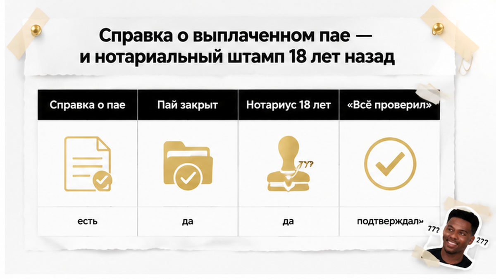
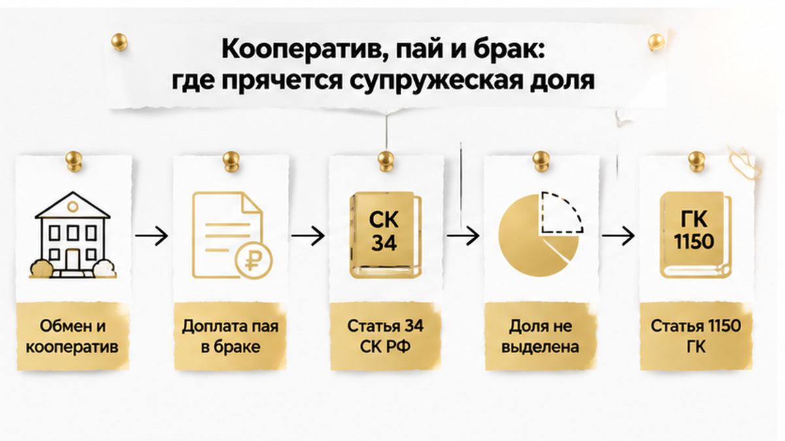
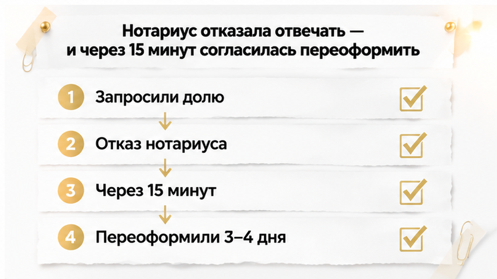
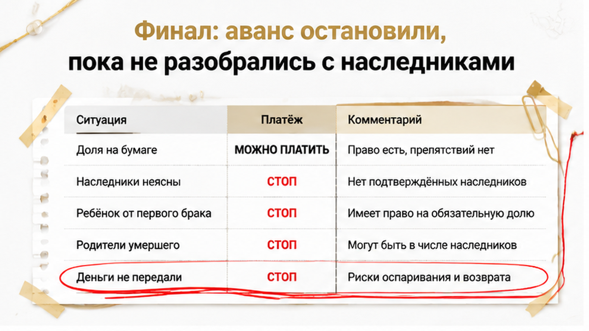
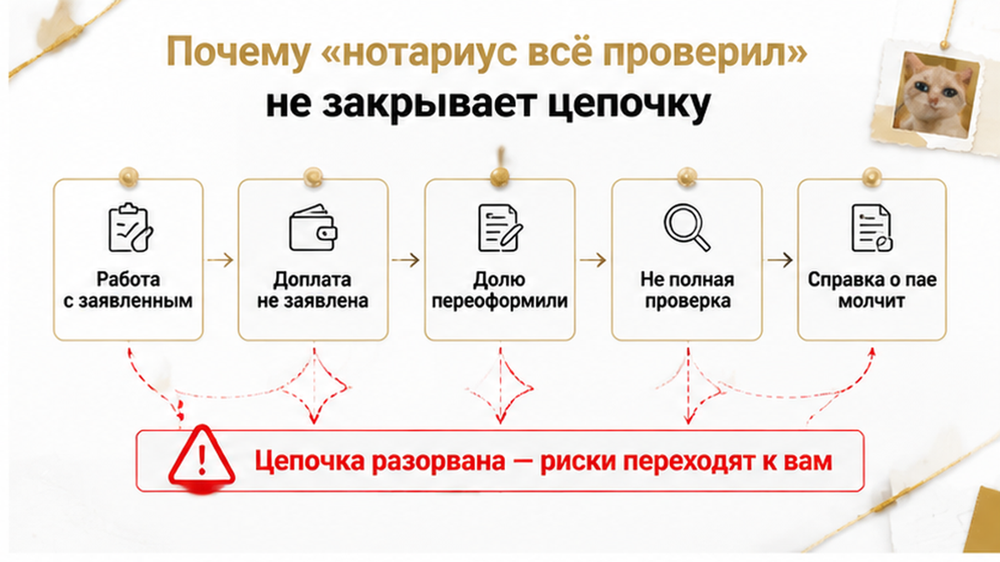
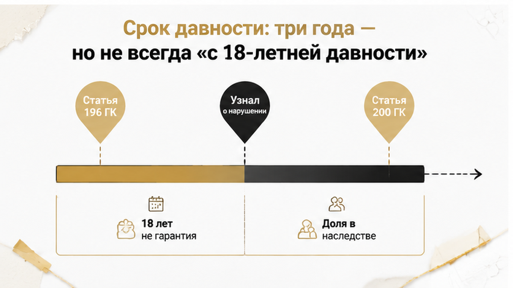
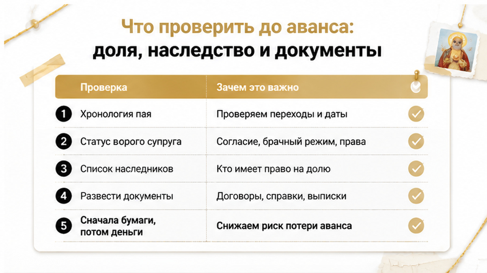

Папка выглядела скучно — в самом хорошем смысле этого слова. Справка о полностью выплаченном пае, зарегистрированное право, ровная история проживания, кооперативный дом, продавец спокоен как утренний двор. Покупатели уже мысленно двигали диван к окну, и тут в разговоре прозвучала фраза, после которой я всегда прошу паузу: «Да там нотариус 18 лет назад всё проверил, когда наследство оформляли». Я услышал в ней не гарантию, а дату — и вопрос, который с тех пор никто не задавал. Через несколько дней аванс по этой квартире так и не был передан, зато нотариус за три-четыре дня переоформила документы, которые, по её же первоначальной позиции, переоформлять было вообще не нужно.
С вами Святослав Шакин, личный риэлтор в Тюмени, и ниже — разбор того, как справка о пае, нотариальный штамп восемнадцатилетней давности и слово «проверил» сложились в цепочку без выделенной супружеской доли и с невыясненным кругом наследников. Кейс я привожу в редакционной локализации: в первоисточнике город не назван, и утверждать, что история случилась именно у нас, я не буду. А вот логика на тюменской кооперативной вторичке ровно та же — я вижу её регулярно.
Если у вас на руках похожая папка и фраза «нотариус когда-то всё проверил» — напишите до аванса, а не после. Разберу вашу цепочку в переписке: Telegram или MAX. Святослав Шакин, The Риэлтор, Тюмень — проверка истории объекта до денег.

Справка о полностью выплаченном пае — бумага хорошая. В кооперативной истории без неё вообще разговаривать не о чем. Но говорит она ровно одно: пай внесён целиком, долгов перед кооперативом нет, право на квартиру возникло законно.
Кем вносился пай — не написано. В какой период — не написано. На какие деньги — тем более. Есть ли у кого-то право требовать долю в этой квартире — справка про это молчит, потому что не для того выдавалась.
Обычный покупатель смотрит на такой лист и видит финальную точку: «пай выплачен, вопрос закрыт». Я смотрю на тот же лист и вижу начало вопроса: «выплачен когда и в каком семейном статусе?»
Вторая опора продавца в нашей папке была ещё крепче на слух. «Да там нотариус 18 лет назад всё проверил, когда наследство оформляли». Не «давно», не «примерно тогда-то» — именно восемнадцать лет. Цифра произносится с гордостью, как срок годности, который заведомо не истёк.
Потому что нотариальное действие закрывает то, что нотариусу принесли и рассказали в тот конкретный день. Заявили состав документов — он с ним и работал. Не заявили, что часть пая доплачивалась в браке, — этой доплаты в деле просто нет. Не из злого умысла: люди сами не считали платёж по кооперативу чем-то юридически значимым. Платили и платили, квартира же своя.
Штамп подтверждает факт действия, но не подтверждает, что кто-то поднял всю историю пая, разложил платежи по годам и проверил, не образовалась ли по дороге супружеская доля.
| Документ или аргумент | Что реально подтверждает | Какой вопрос остаётся открытым |
|---|---|---|
| Справка о полностью выплаченном пае | Пай внесён целиком, право на жильё сформировалось | Из каких денег и в какой период — не отражено |
| Зарегистрированное право в реестре | Право существует и записано на конкретное лицо | Имя в записи не отвечает на вопрос о совместной собственности |
| «Нотариус 18 лет назад всё проверил» | Нотариальное действие совершалось, документы предъявлялись | Была ли исследована история пая и весь круг наследников |
| Спокойствие продавца и долгое проживание | Фактическое владение без конфликтов | Отсутствие конфликта — не отсутствие права у третьих лиц |
Я в таких папках не ищу подлог. Подлог — редкость, а вот незаданный вопрос — норма. Здесь он звучал так: если пай доплачивался в браке, где выделенная супружеская доля?

Начиналась история объекта с обмена. Потом кооператив, потом пай, а часть пая закрывалась уже в браке — квартира при этом оформлена на одну супругу.
Пай, оплаченный в браке, попадает в общее имущество супругов независимо от того, чьё имя стоит в документах — это статья 34 Семейного кодекса. Запись на одного человека сама по себе не делает такой пай личной собственностью. Деньги-то были семейные.
Дальше подключается статья 1150 Гражданского кодекса. Переживший супруг сохраняет свою долю в совместно нажитом, и в наследственную массу эта доля не входит. В массу попадает доля умершего — и вот она уже делится между наследниками.
После смерти мужа супружеская доля в квартире не выделялась. По этой квартире в наследство не вступал вообще никто — при том, что по другому имуществу наследственное дело в своё время открывали. Механизм наследования запускался, семья к нотариусу ходила, бумаги оформляла. А кооперативная квартира из этого механизма выпала.
Право сформировано через пай, доля между супругами не разделена, наследственная часть повисла в воздухе — и висит там восемнадцать лет, никого не беспокоя. До первого покупателя, который начнёт задавать вопросы.
Такое обременение не видно ни в справке о пае, ни в реестровой выписке. Похожую механику я разбирал в кейсе, где перед авансом всплыла умершая супруга и невыделенная доля. Документы другие, обстоятельства другие, вывод один: доля не исчезает от того, что о ней забыли.

Вот из-за этой части кейс и стоит рассказывать. Юристы запросили у нотариуса две вещи. Первую — оформить историю супружеской доли. Вторую — дать сведения, кто вступал в наследство после смерти мужа, а кто отказался. Запрос по сути реставрационный: восстановить картину, которая должна была сложиться много лет назад.
Первая реакция — отказ. Нотариус отвечать не стала и добавила, что проверяющие вообще не вправе задавать такие вопросы.
Тут обычно всё и заканчивается. Спорить с нотариусом непривычно, ощущение «нас поставили на место» работает сильнее любой логики, а покупатель тихо решает, что сам себя накрутил. Мы остались при своём — потому что вопрос был не про полномочия, а про конкретную квартиру, за которую собирались платить.
Примерно через пятнадцать минут позиция изменилась: нотариус согласилась переоформить долю. И супружескую долю действительно выделили, документы переоформили за 3–4 дня. Без суда, без скандала, в рабочем режиме.
Я не собираюсь делать из этого тезис «нотариусы ошибаются всегда». Здесь после обращения оформление привели в порядок быстро и по-человечески. Система сработала — пусть и через сопротивление в первые четверть часа.
Но одну бумагу нам так и не дали — подтверждение того, кто вступал в наследство после смерти мужа. В кейсе это объясняется нежеланием фиксировать документально ошибку первоначального оформления. Мотивы я оценивать не берусь, а вот результат для покупателя прямой: доля выделена, а круг наследников и их отказы остались неподтверждёнными.
А в этом круге — как минимум один ребёнок от первого брака и родители умершего.

Развязка пришла быстрее, чем я рассчитывал. Позиция нотариуса развернулась, супружескую долю выделили, документы переоформили за три-четыре дня. По бумагам стало аккуратно: то, что должно было лечь на место восемнадцать лет назад, наконец получило юридическое отражение. Формально можно было выдыхать и заводить разговор о дате аванса.
Только переоформление доли закрыло половину задачи. Вторая половина — кто именно вступал в наследство после смерти мужа, а кто написал отказ. Эту справку нам не выдали. Объяснение простое: зафиксировать документально круг наследников означало зафиксировать и ошибку первоначального оформления. Мотивы я не оцениваю. Я фиксирую результат: у покупателей на руках была переоформленная доля и полная неясность по людям.
А люди в этой истории просматривались вполне конкретные. По квартире после смерти мужа в наследство не вступал никто — наследственное дело в своё время открывали по другому имуществу. Значит, механизм наследования запускался, но именно эта кооперативная квартира из него выпала. При этом в круг потенциальных наследников входили как минимум один ребёнок от первого брака и родители умершего.
Кто из них подавал заявление, кто отказался, а кто просто ничего не делал — из документов не следовало. И пока не следует, любой расчёт покупателя стоит на предположениях. Обычный человек в такой ситуации смотрит на свежие бумаги и говорит: «Ну вот, всё исправили». Я смотрю на те же бумаги и спрашиваю: «А кто из наследников подписал отказ, и где он лежит?»
Аванс не передали. Не расторгали договор, не судились, не пытались вернуть деньги — потому что деньги никуда не ушли. Покупатели сказали продавцу простую вещь: разберитесь с наследниками, покажите картину целиком, и мы вернёмся к разговору. Самый скучный финал в моей практике и самый недооценённый. Механику того, как круг наследников и отказы собираются в понятную схему, я разбирал отдельно — в кейсе про наследство квартиры, где сын от первого брака не отказался.

«Да там нотариус всё проверил» — фраза, которую продавцы произносят абсолютно искренне. Она звучит как индульгенция, а описывает не объём проверки, а сам факт нотариального действия.
Нотариус работает с тем, что ему заявили и предъявили на конкретную дату. Состав документов, заявления наследников, то, что стороны сами рассказали о семейной истории. Если о доплате пая в браке никто не упомянул, эта доплата в нотариальном действии не появится. Не потому, что её злонамеренно скрыли, а потому, что участники не считали её юридически значимой. Платили и платили — семья же.
Я не утверждаю, что нотариусы ошибаются всегда. В этом кейсе после обращения долю переоформили — система сработала, пусть и через сопротивление. Утверждаю я другое: нотариальное оформление восемнадцатилетней давности не равно исследованию всей истории кооперативного пая, супружеской доли и круга наследников. Это разные задачи. И вторую за покупателя никто не решал.
| Документ на руках | Что он реально подтверждает | Какой вопрос остаётся открытым |
|---|---|---|
| Справка о полностью выплаченном пае | Пай выплачен, основание для возникновения права есть | За счёт чьих средств и в какой период платили — был ли брак на момент доплаты |
| Зарегистрированное право в ЕГРН | Собственник внесён в реестр, запись действующая | Не выделялась ли супружеская доля, которой в реестре не видно |
| Свидетельство о праве на наследство | Действие совершено по сведениям, заявленным на тот момент | Кто вступал, кто отказался, кого вообще не позвали в круг наследников |
| Устная формула «всё чисто, проверяли» | Уверенность продавца в собственной правоте | Всё перечисленное выше, целиком |
Такой зазор между «проверено» и «проверено полностью» ломает сделки и там, где документы прошли профессиональный фильтр: одобрение банка, отчёт оценщика, юрист со стороны кредитора. История про то, как ипотеку одобрили, а регистрацию отменили из-за одной строки в ЕГРН, — ровно про это.

Как только речь заходит о событиях восемнадцатилетней давности, продавец достаёт последний козырь: «срок давности прошёл, спорить некому и нечем».
Общий срок исковой давности — три года, это статья 196 ГК РФ. Но важна не длина срока, а точка отсчёта. Статья 200 ГК РФ говорит, что течение срока может начинаться с момента, когда лицо узнало или должно было узнать о нарушении своего права.
Теперь примерьте это на нашу цепочку. Если наследник восемнадцать лет назад не знал, что часть пая доплачивалась в браке и что супружеская доля не выделялась, отсчёт трёх лет от даты нотариального оформления — не единственная возможная конструкция.
Отдельно держим в голове статью 1150 ГК РФ. Переживший супруг сохраняет право на свою долю в совместно нажитом, и эта доля не входит в наследственную массу. В массу входит доля умершего — та самая, которая здесь восемнадцать лет пролежала неразобранной. Речь не о том, что кто-то «отберёт квартиру». Речь о том, что в объекте потенциально сидит доля, распределение которой между наследниками никогда не оформлялось.
Я не утверждаю, что наследники обязательно предъявят требования. Утверждаю ровно то, что следует из закона: восемнадцать лет — не автоматическая гарантия отсутствия риска.

Дальше не теория, а тот самый порядок, который я прогоняю по каждой кооперативной квартире со взрослой историей.
Первое — хронология пая. Не «квартира кооперативная», а по датам: когда вступили в кооператив, когда и какими частями закрывали пай, когда выдали справку о полной выплате, когда зарегистрировали право. Рядом кладём даты брака. Если хотя бы часть пая закрывалась в браке — вопрос о совместной собственности встаёт по СК РФ ст. 34, и неважно, чьё имя стоит в документах. В нашем кейсе именно тут всё и вылезло: обмен, кооператив, доплата пая уже в браке, а собственник в бумагах один.
Второе — статус второго супруга. Жив, разведён, умер. Если умер — дальше три отдельных вопроса, которые нельзя схлопывать в один: выделялась ли супружеская доля, открывалось ли наследственное дело именно по этой квартире, кто из наследников заявился и кто написал отказ. По кейсу выяснилось, что по квартире в наследство не вступал никто, хотя по другому имуществу наследственное дело открывали. Две разные истории. Продавец путал их совершенно искренне.
Третье — круг возможных наследников. Не «сын один, он не претендует», а перечень: дети умершего, включая детей от прежних браков, его родители, переживший супруг. В нашей цепочке в этот круг попали как минимум один ребёнок от первого брака и родители умершего. Никто из них ничего не требовал. Может, и не потребует. Но покупатель платит не за настроение людей, а за документы — как это выглядит, когда «отказавшийся» родственник оказывается не отказавшимся, я разбирал в кейсе про наследство квартиры, где сын от первого брака не отказался.
Четвёртое — развести документы по назначению. Здесь и рождается ложное спокойствие: одну бумагу принимают за подтверждение всей чистоты.
| Документ | Что действительно подтверждает | Что остаётся непроверенным |
|---|---|---|
| Справка о полностью выплаченном пае | Пай выплачен, право на квартиру возникло | За счёт каких средств и в какой период платили; есть ли супружеская доля |
| Выписка ЕГРН о праве | Кто числится собственником сегодня | Претензии, которые в реестр не попали: невыделенная доля, непринятое наследство |
| Свидетельство о праве на наследство | Кто и на какое имущество наследство оформил | Кто наследство не оформлял, но и от него не отказывался |
| Слова продавца «нотариус всё проверил» | В юридическом смысле — ничего | Весь круг целиком: пай, доля, наследники |
Пятое — сначала бумаги, потом деньги. Если продавец готов подождать три-четыре дня, пока нотариус доводит документы до ума, — это нормальный продавец. Если срочность объясняют тем, что «другой покупатель уже с деньгами», я предлагаю тому покупателю сначала прочитать историю пая. В нашем кейсе супружескую долю выделили и переоформили за 3–4 дня — а подтверждение по наследникам так и не выдали. Ровно на этом месте сделка и встала.
Шестое, техническое. Авансовое соглашение подписывается с условием безусловного возврата денег, если по объекту выявятся непогашенные права третьих лиц или продавец не предоставит запрошенные документы в срок. Это не защита от суда. Это защита от разговоров «ну вы же сами торопились».
Обычный покупатель смотрит на справку о пае и видит закрытый вопрос.
Если нотариус 18 лет назад всё оформил — покупатель уже не вправе задавать вопросы, или вы всё равно копаете цепочку? Напишите в комментариях, где для вас проходит граница разумной паранойи: мне правда интересно, сколько людей остановилось бы на справке о пае.
Если у вашей квартиры в истории есть кооператив, пай и умерший супруг — не разбирайтесь в этом в одиночку за два дня до аванса. Напишите мне в Telegram или MAX, посмотрим цепочку вместе и решим, что запрашивать в первую очередь.
История, с которой мы начали, закончилась спокойно по одной причине: деньги ещё не ушли. Покупатели держали паузу до аванса, задавали неудобные вопросы, ждали ответа нотариуса — и не стали заходить в сделку, пока нет ясности по наследникам.
Обратную сторону я видел не раз: когда деньги переданы, покупатель уже уговаривает вернуть своё. Как это выглядит в жизни, я разбирал в кейсе, где расписку на квартиру написали, а денег на счёте нет.
Я не утверждаю, что наследники в нашем случае обязательно заявили бы права, а сделка неминуемо развалилась бы. Может, всё прошло бы тихо. Но покупатель не обязан играть в эту лотерею на свои: риск, который нельзя проверить документом, либо оплачивается ценой, либо не принимается вовсе. Мы выбрали второе.
Смотрите вторичку с кооперативным прошлым и не понимаете, что означает справка о пае в вашей папке? Спросите до аванса, а не после. Один разговор дешевле любой попытки вернуть переданные деньги.
Материал проверен: Святослав Шакин, личный риэлтор в Тюмени. Ориентир для покупателя, не индивидуальная юридическая консультация.